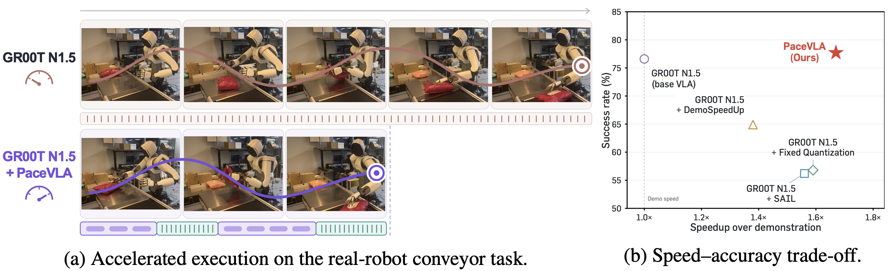
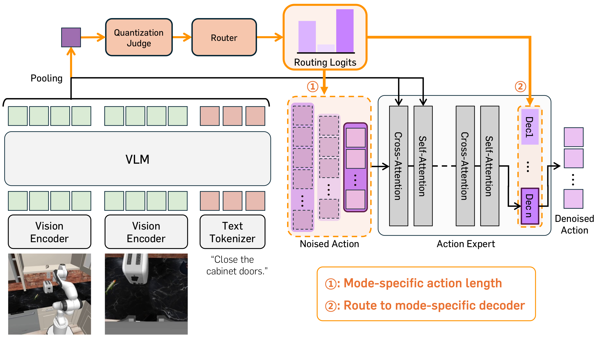

TL;DR: PaceVLA lets a Vision-Language-Action policy choose how coarsely and how far ahead to act at every inference step, executing tasks faster than the teleoperated demonstrations it was trained on while maintaining task success.

Fast and reliable manipulation is crucial for practical robot deployment. Although Vision-Language-Action (VLA) models have recently shown remarkable progress as generalist robot policies, their execution often remains temporally inefficient. A key source of this inefficiency is that policies learn fine-grained temporal patterns from teleoperated demonstrations, requiring many low-level action steps. Temporal action quantization offers a simple way to accelerate execution by aggregating consecutive low-level actions into temporally coarser actions. However, applying action quantization without considering when fine-grained control is required introduces a speed–accuracy trade-off: accelerated actions may efficiently reduce redundant steps in some phases, while discarding critical motion details in precision-sensitive interactions. To address this, we propose PaceVLA, a unified framework for adaptive temporal execution in VLAs that integrates two coupled components: (1) mode-specific action decoders built on a shared action expert, supporting multiple temporal granularities and prediction horizons, (2) a quantizability-guided mode selection scheme which decides whether coarse execution is appropriate, and a context-conditioned router that selects an execution mode at each inference step. Experiments across three multi-task simulation benchmarks and six real-world tasks show that PaceVLA improves execution efficiency while maintaining task success rate across multiple embodiments, including long-horizon and dexterous manipulation.
PaceVLA equips a shared flow-matching action expert with mode-specific action decoders, each corresponding to an execution mode with its own temporal quantization level and prediction horizon. Fine-grained modes reproduce the demonstration's original temporal resolution, while quantized modes aggregate consecutive low-level actions into temporally coarser commands that cover the same motion in fewer steps.
At each inference step, a quantization judge, supervised with per-step quantizability scores distilled from task execution outcomes and a large vision-language model, decides whether the current phase tolerates coarse execution, and a context-conditioned router selects an execution mode within the chosen group from the visual and language context. The policy thereby commits to long, coarse actions during free-space motion and falls back to fine-grained, short-horizon control in precision-critical phases such as grasping and contact-rich interaction, adding only marginal inference overhead (1.05×).

Side-by-side rollouts of the base VLA (GR00T N1.5) and GR00T N1.5 + PaceVLA (Ours)
across three embodiments.
All videos play at 1× (real time).
GR00T N1.5 (Base) — 3.6 packages/min
GR00T N1.5 + PaceVLA (Ours) — 6.3 packages/min
GR00T N1.5 (Base)
GR00T N1.5 + PaceVLA (Ours)
GR00T N1.5 (Base)
GR00T N1.5 + PaceVLA (Ours)
GR00T N1.5 (Base)
GR00T N1.5 + PaceVLA (Ours)
GR00T N1.5 (Base)
GR00T N1.5 + PaceVLA (Ours)